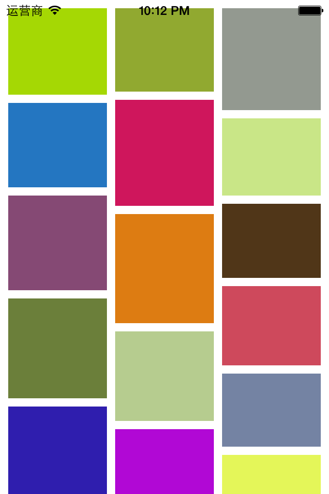

自定义瀑布流控件
在移动APP中，瀑布流越来越流行。本篇自定义一个简单的瀑布流控件。首先，模仿UITableView,定义一个数据源和代理协议。数据源协议有三个方法。如下：
@protocol GYWaterflowViewDataSource <NSObject>
@required
/** 有多少条数据 */
-(NSUInteger)numberOfCellsInWaterflowView:(GYWaterflowView *)waterflowView;
/** index位置对应的cell */
-(GYWaterflowViewCell *)waterflowView:(GYWaterflowView *)waterflowView cellAtIndex:(NSUInteger)index;
@optional
/** 有多少列 */
-(NSUInteger)numberOfColumnsInWaterflowView:(GYWaterflowView *)waterflowView;
@end
然后，定义协议的方法，如下：
@protocol GYWaterflowViewDelegate <UIScrollViewDelegate>
@optional
/** index位置cell的高度 */
-(CGFloat)waterflowView:(GYWaterflowView *)waterflowView heightAtIndex:(NSUInteger)index;
/** 选中index处的cell */
-(void)waterflowView:(GYWaterflowView *)waterflowView didSelectAtIndex:(NSUInteger)index;
/** 返回间距 */
-(CGFloat)waterflowView:(GYWaterflowView *)waterflowView marginForType:(GYWaterflowViewMarginType)type;
@end
这样，在控制器中我们就可以像使用tableView一样的轻松的使用这个瀑布流控件了。在控制器中，可以如下这样使用它。
#import "GYViewController.h"
#import "GYWaterflowView.h"
#import "GYWaterflowViewCell.h"
@interface GYViewController ()<GYWaterflowViewDataSource, GYWaterflowViewDelegate>
@end
@implementation GYViewController
- (void)viewDidLoad
{
[super viewDidLoad];
// 添加一个瀑布流控件
GYWaterflowView *waterflowView = [[GYWaterflowView alloc] init];
waterflowView.frame = self.view.bounds;
waterflowView.dataSource = self;
waterflowView.delegate = self;
[self.view addSubview:waterflowView];
}
#pragma mark - waterflowView dataSoure
-(NSUInteger)numberOfCellsInWaterflowView:(GYWaterflowView *)waterflowView
{
return 100;
}
-(GYWaterflowViewCell *)waterflowView:(GYWaterflowView *)waterflowView cellAtIndex:(NSUInteger)index
{
static NSString *identifier = @"waterflowViewCell";
GYWaterflowViewCell *cell = [waterflowView dequeueReusableCellWithIdentifier:identifier];
if (cell == nil) {
cell = [[GYWaterflowViewCell alloc] init];
cell.identifier = identifier;
}
cell.backgroundColor = GYRandomColor;
return cell;
}
#pragma mark - waterflowView delegate
-(CGFloat)waterflowView:(GYWaterflowView *)waterflowView heightAtIndex:(NSUInteger)index
{
return (arc4random_uniform(40) + 70);
}
@end
效果如下图：

接下来，是如何实现GYWaterflowView。模仿tableView，定义一个reloadData方法，当调用这个方法时，会刷新里面的所有子控件。我们定义一个GYWaterflowViewCell作为它的子控件。在这个cell类中，提供一个identifier属性用来标识cell。在reloadData方法中，需要重新计算所有的cell的frame。然后在layoutSubView方法中将在屏幕上的cell显示出来。reloadData方法的具体实现如下：
-(void)reloadData
{
// 清空之前的数据
[self.displayingCells.allValues makeObjectsPerformSelector:@selector(removeFromSuperview)];
[self.displayingCells removeAllObjects];
[self.cellFrames removeAllObjects];
[self.reuseableCells removeAllObjects];
// 数据总条数
NSUInteger numberOfCells = [self.dataSource numberOfCellsInWaterflowView:self];
// 总列数
NSUInteger numberOfColumns = [self numberOfColumns];
// 间距
CGFloat topM = [self marginForType:GYWaterflowViewMarginTypeTop];
CGFloat leftM = [self marginForType:GYWaterflowViewMarginTypeLeft];
CGFloat rowM = [self marginForType:GYWaterflowViewMarginTypeRow];
CGFloat columnM = [self marginForType:GYWaterflowViewMarginTypeColumn];
CGFloat bottomM = [self marginForType:GYWaterflowViewMarginTypeBottom];
// 计算cell的宽度
CGFloat cellW = [self cellWidth];
// 用一个C语言数组存放所有列的最大y值
CGFloat maxYOfColumns[numberOfColumns];
// 初始化
for (int i = 0; i < numberOfColumns; i++) {
maxYOfColumns[i] = 0.0;
}
// 计算所有cell的frame
for (int i = 0; i < numberOfCells; i++) {
// cell处在第几列
NSUInteger cellColumn = 0;
// cell所处那列的最大Y值(最短那一列的最大Y值)
CGFloat cellMaxYOfColumn = maxYOfColumns[cellColumn];
// 求出最短的一列
for (int j = 1; j<numberOfColumns; j++) {
if (maxYOfColumns[j] < cellMaxYOfColumn) {
cellColumn = j;
cellMaxYOfColumn = maxYOfColumns[j];
}
}
// 计算出cell的位置
CGFloat cellX = leftM + (cellW + columnM) * cellColumn;
CGFloat cellY = 0;
if (cellMaxYOfColumn == 0.0) { // cell处在第一行
cellY = topM;
} else {
cellY = cellMaxYOfColumn + rowM;
}
// cell的高度
CGFloat cellH = [self heightAtIndex:i];
// 计算出cell的frame
CGRect cellFrame = CGRectMake(cellX, cellY, cellW, cellH);
// 将cell的frame添加到数组中
[self.cellFrames addObject:[NSValue valueWithCGRect:cellFrame]];
// 更新cell所处列的最大y值
maxYOfColumns[cellColumn] = CGRectGetMaxY(cellFrame);
}
// 设置contentSize
CGFloat contentH = maxYOfColumns[0];
for (int i = 1; i < numberOfColumns; i++) {
if (maxYOfColumns[i] > contentH) {
contentH = maxYOfColumns[i];
}
}
contentH += bottomM;
self.contentSize = CGSizeMake(0, contentH);
}
这样，每个cell的的frame都计算出来了，并保存在cellFrames数组中。也计算出来了waterflowView的contentSize。然后就可以在layoutSubView中，将在屏幕上的cell显示出来。layoutSubViews具体实现如下：
-(void)layoutSubviews
{
[super layoutSubviews];
// cell总数
NSUInteger numberOfCells = self.cellFrames.count;
for (int i = 0; i < numberOfCells; i++) {
// 取出i位置的cellFrame
CGRect cellFrame = [self.cellFrames[i] CGRectValue];
// 从字典中取出i位置的cell
GYWaterflowViewCell *cell = self.displayingCells[@(i)];
// 判断cellFrame在不在屏幕上
if ([self isInScreen:cellFrame]) {
if (cell == nil) {
cell = [self.dataSource waterflowView:self cellAtIndex:i];
cell.frame = cellFrame;
[self addSubview:cell];
// 存放到字典中
self.displayingCells[@(i)] = cell;
}
} else {
if (cell) {
// 从scrollView和displayingCells字典中删除
[cell removeFromSuperview];
[self.displayingCells removeObjectForKey:@(i)];
// 存放到缓存池中
[self.reuseableCells addObject:cell];
}
}
}
}
通过每个cell的frame，计算这个cell是否在屏幕上，如果不是，则不显示，并且，如果这个cell刚从屏幕上移除，那么将它从waterflowView上移除，并且从正在显示的cell的字典中删除，然后放入缓存池中。如果cell的frame在屏幕范围内，那么需要判断这个cell在滚动之前是否已经在屏幕上了，如果在，则什么也不做，如果不在，则从数据源方法中获得这个cell并且添加到waterflowView中。isInScreen:方法实现如下：
/**
* 判断cell的frame是否显示在屏幕上
*/
- (BOOL)isInScreen:(CGRect)frame
{
return ((CGRectGetMaxY(frame) > self.contentOffset.y) && (CGRectGetMinY(frame) < self.contentOffset.y + self.bounds.size.height));
}
还有一个注意点是，当瀑布流控件添加到控制器的view中时，需要显示这个控件的内容，因此我们可以在willMoveToSuperView:方法中调用reloadData方法，让它一添加就进行显示。
还有一个注意点是，我们提供了cell的复用机制，- (id)dequeueReusableCellWithIdentifier:(NSString *)identifier的实现如下：
-(id)dequeueReusableCellWithIdentifier:(NSString *)identifier
{
__block GYWaterflowViewCell *reuseableCell = nil;
[self.reuseableCells enumerateObjectsUsingBlock:^(GYWaterflowViewCell *cell, BOOL *stop) {
if ([cell.identifier isEqualToString:identifier]) {
reuseableCell = cell;
*stop = YES;
}
}];
if (reuseableCell) {
[self.reuseableCells removeObject:reuseableCell];
}
return reuseableCell;
}